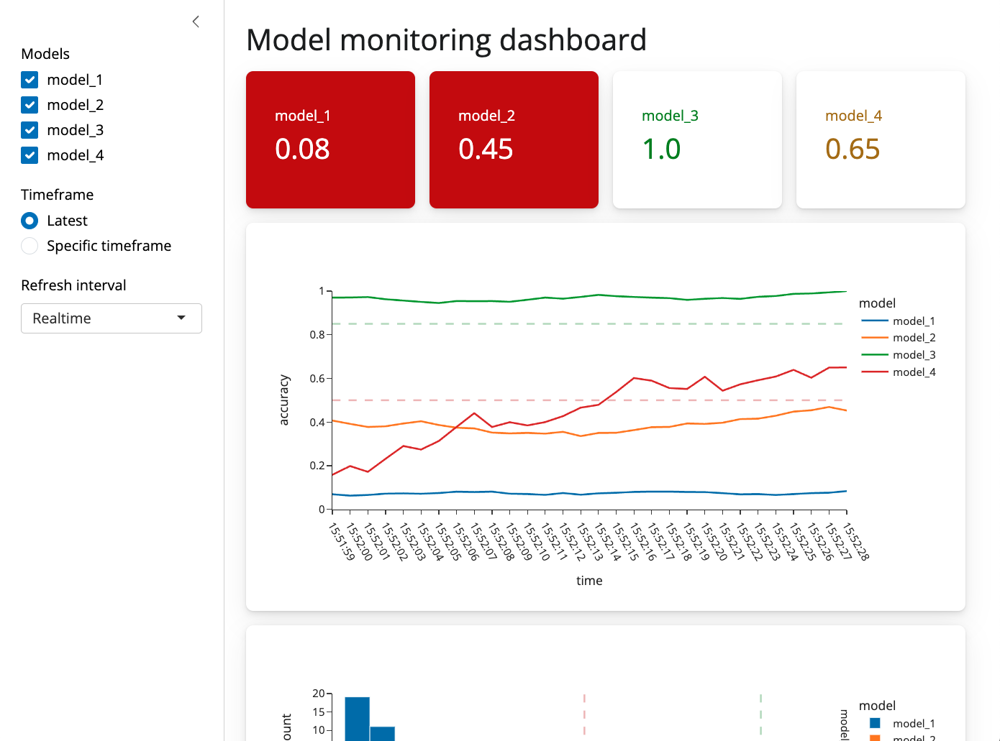

We recently released Shiny for Python 0.6.0, this is a big release so it’s a good idea to check out the changelog for a full set of new features. This post is going to focus on the four most important changes in 0.6.0.
Optional @output
Up until now every Shiny output needed two decorators, an @output decorator and some kind of @render decorator. The reason for this is that you can pass arguments like id to @output and so having a separate decorator made sense. Requiring both decorators for every output, however, was a common source of bugs for new users. For example if you neglected to include the output decorator, or used the decorators in the wrong order, you would get a silent failure. As a result we’ve made the @output decorator optional, and recommend that you only use it if you need to access one of its arguments.
def server(input, output, session):
# @output # <- No longer necessary!
@render.text
def txt():
return f"n*2 is {input.n() * 2}"New page layouts
A large majority of shiny apps use either a sidebar layout or a navbar layout, and up until this point you’ve needed to combine a page_* and layout_* or navset_* call to generate that kind of app. We’ve added two new functions ui.page_sidebar and ui.page_navbar to better accomodate these cases, and we’ve also improved the look and feel of the default applications. Both ui.page_navbar and ui.page_sidebar added a sidebar= argument which includes a responsive, collapsable sidebar (ui.sidebar) on your application across every tab.
The updated layout sidebar (ui.layout_sidebar()) no longer needs to include a call to ui.panel_main(). It is recommended to put content inside ui.card() within the main content of ui.page_sidebar(). Please update your calls of ui.panel_sidebar() to ui.sidebar().
New components
There are a lot of new components in this release, but the two most important ones are ui.card() and ui.value_box(). Cards allow you to visually dilineate parts of your application, and group inputs and outputs together. For example, you might have a card which included a plot and some inputs which filter the data for that particular plot. Cards also provide sensible spacing which makes your app look less cluttered and easier to read.
Value boxes are for highlighting single numbers or pieces of text. They are useful for calling out important numbers or pieces of text, and can include showcase icons. To top it off, value boxes are enhanced with advanced Bootstrap theming capabilities, allowing you to change the color of the box, the icon, and the text.

Both value boxes and cards can be positioned using ui.layout_column_wrap. This function provides a convenient way to display elements in equally spaced columns. The values boxes in the above example are presented using ui.layout_column_wrap.
While you can arrange content with ui.row() and ui.column(), ui.layout_column_wrap() removes a lot of additional boilerplate. For example if you had three cards which you wanted to lay out on a row, you would do it like this:
ui.layout_column_wrap(
ui.card("Card 1 content"),
ui.card(ui.plot_output("plot2")),
ui.card(ui.plot_output("plot3")),
width = 1/3,
)Many other components
There are too many new components in this release to blog about, so please check out the documentation to see how they work together.
If you’re using shiny.experiemental.ui, you can now use shiny.ui instead. We’ve moved virtually all of the experimental components into the main shiny.ui namespace. 🎉
That’s it for today! As always, if you have any questions or feedback, please join us on Discord or open an issue on GitHub. And if you’re enjoying Shiny for Python, please consider starring us on GitHub to show your support!